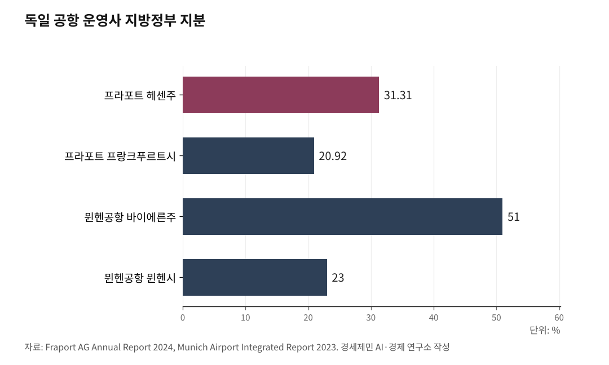

[칼럼] 노무현 정신 계승하되 정책은 그만, 5극3특 권역별 공항공사체제로
인천국제공항공사·한국공항공사·가덕도건설공단 통합은 5극3특 역행
해양수산부는 현장으로 보내면서 공항은 왜 통합하나
분산과 분권은 다르다, 독일은 주정부가 공항을 운영한다
경세제민 AI·경제 연구소 김갑봉 박사

1. 통합은 집중이다, 5극3특에 역행한다
정부가 인천국제공항공사와 한국공항공사, 가덕도신공항건설공단 기관 3개 통합을 검토하고 있다. 재경부는 지난 13일 민간작업반이 통폐합 방안을 논의했고, 이달 안에 이재명 대통령에게 보고할 예정이다. 아직 결정된 바는 없다고 했지만, 불은 붙었다.
18일 인천시청에서 '인천공항 졸속통합 반대 시민·노동단체 대책위원회'가 기자회견을 열었다. 영종국제도시총연합회, 인천국제공항공사노동조합 등 연합 6개와 단체 587개가 참여했다.
유정복 인천시장은 "흑자경영으로 글로벌 허브공항 위상을 지켜온 인천공항이 만성 적자인 지방공항 운영권과 10조원 규모 가덕도 신공항 건설비용까지 떠안는 구조는 합리적이지 않다"며 반대했다. 더불어민주당 박찬대 인천시장 후보도 반대 입장을 냈다.
언론은 인천국제공항공사 노조 대 한국공항공사 노조 대립 구도로 보도한다. 조직이기주의 싸움으로 비친다. 본질이 묻힌다.
이것은 노조 대 노조 싸움이 아니다. 통합이냐 분권이냐의 문제다. 이재명 정부 5극3특 정책에 비춰보면, 통합은 분권이 아니라 집중이다. 5극3특에 정면으로 역행한다.

2. 해양수산부는 현장으로, 공항은 왜 통합으로
이재명 대통령은 해양수산부를 부산으로 이전했다. 지난해 12월 23일 부산 동구에서 개청식을 열었다.
핵심 논리는 세 가지였다. 부산이 해양산업 현장이니 거기서 정책을 만들어야 한다는 현장성. 수도권 과밀을 해소하겠다는 균형발전. 북극항로 시대에 부산을 글로벌 물류 거점으로 키우겠다는 전략이었다.
같은 정부가 공항은 통합하겠다고 한다. 해양수산부는 현장에 가까이 가야 정책 실행력이 높아진다면서, 공항은 왜 중앙에서 하나로 묶으려 하는가.
인천국제공항은 대한민국 항공의 현장 그 자체다. 국제여객 대부분, 국제항공화물 99%가 인천공항을 통한다. 현장성 논리를 따르면 인천국제공항공사는 독립 운영돼야 하고, 오히려 권한이 강화돼야 한다.
인천국제공항공사는 3조2000여억원의 정부출자금과 공사채를 발행해 독립채산제로 1~4단계 건설에 18조원을 투입했다. 공사채 원리금을 상환하면서 매년 수천억원의 배당금을 기획재정부에 납부하고 있다.
코로나19로 3년간 1조7090억원 적자를 낼 때 정부는 한 푼도 지원하지 않았다. 흑자로 돌아서자 배당금 2248억원을 가져갔다. 이런 공사를 적자 기관과 통합하겠다는 것은 황금 거위 배를 가르는 것이다.
3. 분산과 분권은 다르다
노무현 대통령은 세종시를 만들고 공공기관을 지방으로 이전했다. 문재인 대통령도 공공기관 2차 이전을 추진했다. 둘 다 분산이었다. 수도권에 있던 기관을 지방으로 옮겼지만, 권한은 여전히 중앙정부가 쥐고 있었다.
이재명 대통령의 해양수산부 부산 이전도 분산이다. 세종에 있던 부처를 부산으로 옮겼을 뿐, 해양수산 정책 권한을 부산시에 넘긴 것은 아니다.
경실련도 이 점을 지적했다. 해양수산부 이전이라는 '분산' 시책 대신 해양수산청 지방 이양 같은 '분권' 정책으로 전환해야 한다고 했다.
20년간 분산을 했다. 결과는 어떤가. 지방소멸은 가속화됐고, 수도권 집중은 심화됐다. 분산만으로는 지방이 살아나지 않는다는 것을 결과가 증명했다.
노무현 대통령 정신, 즉 수도권 집중을 해소하고 지방을 살리겠다는 의지는 계승해야 한다. 그러나 수단인 분산정책은 이제 그만할 때다. 분권으로 가야 한다.
통합은 분권의 반대다. 분산조차 아닌 집중이다. 인천국제공항공사, 한국공항공사, 가덕도건설공단을 하나로 합치면 중앙정부 산하에 거대한 공항 독점체가 생긴다. 지방공항 착근성도, 애정도, 전문성도 희석된다.
4. 독일 연방제 공항 운영, 주정부가 주인이다
독일을 보자. 연방제 국가인 독일은 공항을 주(州)정부 주도로 분권적으로 운영한다. 연방정부가 국내 공항을 하나로 통합하지 않는다.
[사진 위치: 독일 프랑크푸르트공항 또는 뮌헨공항]
프랑크푸르트공항을 운영하는 프라포트(Fraport AG) 최대 주주는 헤센주(31.31%)다. 프랑크푸르트시(20.92%)가 2대 주주다. 지방정부 지분이 52.23%로 과반을 넘는다.
뮌헨공항을 운영하는 뮌헨공항유한회사(Flughafen Muenchen GmbH)는 바이에른주가 51%, 연방정부 26%, 뮌헨시 23% 지분을 갖고 있다. 바이에른주가 과반을 쥐고 독자 운영한다.
베를린 브란덴부르크공항도 주정부·연방정부·시 합의 구조다. 각 주가 자기 공항 권한과 책임을 갖고, 독립채산제로 운영한다.
프랑크푸르트는 프랑크푸르트대로, 뮌헨은 뮌헨대로, 베를린은 베를린대로 경쟁하며 키운다. 이것이 지방분권이다.
한국헌법학회 논문도 같은 방향을 가리킨다. "지방분권형 개헌 방향은 연방제 수준에 가까운 지방분권으로서, 입법권, 사법권, 행정권을 지방자치단체와 조화롭게 배분하는 것"이라고 분석했다.
5. 5극3특 권역별 공항공사체제, 구체적 그림
통합 대신 분권이다. 5극3특 권역별 공항공사체제를 제안한다.
경인경제권은 인천국제공항공사와 서울국제공항공사(김포공항)로 나눠 키운다. 부울경경제권은 부울경국제공항공사가 김해공항 흑자를 기반으로 가덕도국제공항을 건설한다. 공사채와 정부출자금으로 독립채산제를 운영한다.
대구경북경제권은 대구경북국제공항공사가 대구공항 흑자와 기부대양여 개발로 신공항을 건설한다. 호남경제권은 호남국제공항공사가 무안공항 통합이전을 완료하고 국제선을 활성화한다.
충청경제권은 충청국제공항공사가 청주공항 흑자로 민간활주로를 건설한다. 제주와 강원은 각각 제주국제공항공사, 강원국제공항공사가 맡는다.
재원 조달은 이렇다. 인천국제공항공사 배당금을 국고 귀속이 아니라 공항 특별회계로 전환해 지방 신공항과 인프라에 직접 출자한다. 부족한 재원은 미래 수익을 기반으로 공사채를 발행해 조달한다.
각 권역 공사가 독립채산제로 운영하면서 공사채 원리금을 상환하고, 정부출자금에 대한 배당금을 기획재정부에 납부하는 구조다.
철도 통합과 비교하면 논리가 명확해진다. 공항 기관 3개를 통합하자는 것은 한국철도공사와 SR, 광역시도별 교통공사까지 전부 통합하자는 것과 같은 수준이다. 누구도 찬성하지 않을 것이다.
이미 부산은 가덕도건설공단 설립으로 권역별 공항공사체제를 시작했다. 제주, 대구경북, 광주전남도 권역별 공항공사체제가 검토돼 왔다.
6. 지방분권 개헌과 연방제, 궁극의 방향
5극3특 권역별 공항공사체제는 분권 시작이다. 궁극적으로는 지방분권 개헌과 연방제 도입으로 가야 한다.
공기업을 권역별로 나누고 권한을 넘기는 것이 수도권 인구 집중 방지, 지방소멸 해소, 지방경쟁력을 극대화하는 길이다.
한국수자원공사가 유역별로 강을 관리하듯, 공항도 권역별로 운영해야 한다. 한국철도공사와 SR 통합은 국내 단위 철도망 관리 효율성 차원이니 다른 문제다.
그 외 중앙정부 산하 공기업은 5극3특별로 나눠야 수도권 인구 집중을 막고, 지방소멸을 해소하고, 지방경쟁력을 극대화할 수 있다.
분산에서 분권으로, 분권에서 연방제로. 노무현의 꿈을 완성하는 길은 기관을 옮기는 것이 아니라, 권한을 나누는 것이다.
참고문헌
경향신문, "인천공항·공항공사에 가덕도까지...정부 3개 기관 통합 추진에 노조 졸속 반발", 2026.3.16. https://www.khan.co.kr/article/202603161126001/
경향신문, "정부, 인천공항 적자 땐 한푼도 안 줘놓고...흑자 땐 절반 가까이 꿀꺽", 2024.6.11. https://www.khan.co.kr/article/202406111041001
경실련, "해양수산부 부산 이전, 선거 논리 아닌 사회적 합의 과정 거쳐야", 2025. https://ccej.or.kr/posts/3wtE82y
인천국제공항공사, "건설현황 1~4단계", 2024. https://www.airport.kr/co_ko/767/subview.do
Fraport AG, "Development in Shareholder Structure", Annual Report 2024. https://www.annual-report.fraport.com/annual-report/2024/en/to-our-shareholders/share-and-investor-relations/development-in-shareholder-structure/
Munich Airport, "Situation of the Group", Integrated Report 2023. https://report2023.munich-airport.com/financial-report/group-management-report/situation-of-the-group/
최용전(2018), "최근 헌법개정안에 나타난 지방분권형 개헌의 방향과 과제", 『지방자치법연구』 18(1), 135-162. https://kci.go.kr/kciportal/ci/sereArticleSearch/ciSereArtiView.kci?sereArticleSearchBean.artiId=ART002326131
"지방분권강화 방안으로서 연방국가 원리에 관한 고찰", 『헌법학연구』 22(1). https://scholar.kyobobook.co.kr/article/detail/4010024911705
인천투데이, "독일 연방제와 한국 10차 개헌 그리고 지방분권", 2025.7.24. https://www.incheontoday.com/news/articleView.html?idxno=302550